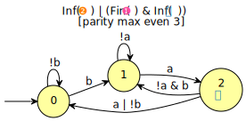

SAT-based Minimization of Deterministic ω-Automata
Table of Contents
This page explains how to use ltl2tgba, dstar2tgba, or autfilt
to minimize deterministic automata using a SAT solver.
Let us first state a few facts about this minimization procedure.
- The procedure works only on deterministic Büchi automata: any recurrence property can be converted into a deterministic Büchi automaton, and sometimes there are several ways of doing so.
- Spot actually implements two SAT-based minimization procedures: one
that builds a deterministic transition-based Büchi automaton
(DTBA), and one that builds a deterministic transition-based
ω-automaton with arbitrary acceptance condition (DTωA). In
ltl2tgbaanddstar2tgba, the latter procedure is restricted to TGBA. Inautfiltit can use different and acceptance conditions for input and output, so you could for instance input a Rabin automaton, and produce a Streett automaton. - These two procedures can optionally constrain their output to use state-based acceptance. (They simply restrict all the outgoing transitions of a state to belong to the same acceptance sets.)
- Spot is built using PicoSAT 965. This solver was chosen for its performances, simplicity of integration and license compatibility. However, it is still possible to use an external SAT solver (as described below).
ltl2tgbaanddstar2tgbawill always try to output an automaton. If they fail to determinize the property, they will simply output a nondeterministic automaton, if they managed to obtain a deterministic automaton but failed to minimize it (e.g., the requested number of states in the final automaton is too low), they will return that "unminimized" deterministic automaton. There are only two cases where these tool will abort without returning an automaton: when the number of clauses output by Spot (and to be fed to the SAT solver) exceeds \(2^{31}\), or when the SAT-solver was killed by a signal.autfilt --sat-minimizewill only output an automaton if the SAT-based minimization was successful.- Our FORTE'14 paper describes the SAT encoding for the minimization of deterministic BA and TGBA. Our LPAR'15 paper describes the generalization of the SAT encoding to deal with deterministic TωA with any acceptance condition.
How to change the SAT solver used
By default Spot uses PicoSAT 965), this SAT-solver is built into the Spot library, so that no temporary files are used to store the problem.
The environment variable SPOT_SATSOLVER can be used to change the
SAT solver used by Spot. This variable should describe a shell command
to run the SAT-solver on an input file called %I so that a model satisfying
the formula will be written in %O. For instance to use Glucose 3.0, instead
of the builtin version of PicoSAT, define
export SPOT_SATSOLVER='glucose -verb=0 -model %I >%O'
We assume the SAT solver follows the input/output conventions of the SAT competition
Enabling SAT-based minimization in ltl2tgba or dstar2tgba
Both tools follow the same interface, because they use the same
post-processing steps internally (i.e., the spot::postprocessor
class).
First, option -D should be used to declare that you are looking for
more determinism. This will tweak the translation algorithm used by
ltl2tgba to improve determinism, and will also instruct the
post-processing routine used by both tools to prefer a
deterministic automaton over a smaller equivalent nondeterministic
automaton.
However -D is not a guarantee to obtain a deterministic automaton,
even if one exists. For instance, -D fails to produce a
deterministic automaton for GF(a <-> XXb). Instead we get a 9-state
non-deterministic automaton.
ltl2tgba -D 'GF(a <-> XXb)' --stats='states=%s, det=%d'
states=9, det=0
Option -x tba-det enables an additional
determinization procedure, that would otherwise not be used by -D
alone. This procedure will work on any automaton that can be
represented by a DTBA; if the automaton to process use multiple
acceptance conditions, it will be degeneralized first.
On our example, -x tba-det successfully produces a deterministic
TBA, but a non-minimal one:
ltl2tgba -D -x tba-det 'GF(a <-> XXb)' --stats='states=%s, det=%d'
states=7, det=1
Option -x sat-minimize will turn-on SAT-based minimization. It also
implies -x tba-det, so there is no need to supply both options.
ltl2tgba -D -x sat-minimize 'GF(a <-> XXb)' --stats='states=%s, det=%d'
states=4, det=1
We can draw it:
ltl2tgba -D -x sat-minimize 'GF(a <-> XXb)' -d
Clearly this automaton benefits from the transition-based
acceptance. If we want a traditional Büchi automaton, with
state-based acceptance, we only need to add the -B option. The
result will of course be slightly bigger.
ltl2tgba -BD -x sat-minimize 'GF(a <-> XXb)' -d
There are cases where ltl2tgba's tba-det algorithm fails to produce a deterministic automaton.
In that case, SAT-based minimization is simply skipped. For instance:
ltl2tgba -D -x sat-minimize 'G(F(!b & (X!a M (F!a & F!b))) U !b)' --stats='states=%s, det=%d'
states=5, det=0
The question, of course, is whether there exist a deterministic
automaton for this formula, in other words: is this a recurrence
property? There are two ways to answer this question using Spot and
some help from ltl2dstar.
The first is purely syntactic. If a formula belongs to the class of
"syntactic recurrence formulas", it expresses a syntactic property.
(Of course there are formulas that expresses a syntactic properties
without being syntactic recurrences.) ltlfilt can be instructed to
print only formulas that are syntactic recurrences:
ltlfilt --syntactic-recurrence -f 'G(F(!b & (X!a M (F!a & F!b))) U !b)'
G(F(!b & (X!a M (F!a & F!b))) U !b)
Since our input formula was output, it expresses a recurrence property.
The second way to check whether a formula is a recurrence is by
converting a deterministic Rabin automaton using dstar2tgba. The
output is guaranteed to be deterministic if and only if the input DRA
expresses a recurrence property.
ltlfilt --remove-wm -f 'G(F(!b & (X!a M (F!a & F!b))) U !b)' -l | ltl2dstar --ltl2nba=spin:ltl2tgba@-Ds - - | dstar2tgba -D --stats='input(states=%S) output(states=%s, acc-sets=%a, det=%d)'
input(states=11) output(states=9, acc-sets=1, det=1)
In the above command, ltldo is used to convert the LTL formula into
ltl2dstar's syntax. Then ltl2dstar creates a deterministic Rabin
automaton (using ltl2tgba as an LTL to BA translator), and the
resulting 11-state DRA is converted
into a 9-state DTBA by dstar2tgba.
Since that result is deterministic, we can conclude that the formula
was a recurrence.
As far as SAT-based minimization goes, dstar2tgba will take the same
options as ltl2tgba. For instance we can see that the smallest DTBA
has 4 states:
ltlfilt --remove-wm -f 'G(F(!b & (X!a M (F!a & F!b))) U !b)' -l | ltl2dstar --ltl2nba=spin:ltl2tgba@-Ds - - | dstar2tgba -D -x sat-minimize --stats='input(states=%S) output(states=%s, acc-sets=%a, det=%d)'
input(states=11) output(states=4, acc-sets=1, det=1)
More acceptance sets
The formula "G(F(!b & (X!a M (F!a & F!b))) U !b)" can in fact be minimized into an
even smaller automaton if we use multiple acceptance sets.
Unfortunately because dstar2tgba does not know the formula being
translated, and it always convert a DRA into a DBA (with a single
acceptance set) before further processing, it does not know if using
more acceptance sets could be useful to further minimize it. This
number of acceptance sets can however be specified on the command-line
with option -x sat-acc=M. For instance:
ltlfilt --remove-wm -f 'G(F(!b & (X!a M (F!a & F!b))) U !b)' -l | ltl2dstar --ltl2nba=spin:ltl2tgba@-Ds - - | dstar2tgba -D -x sat-minimize,sat-acc=2 --stats='input(states=%S) output(states=%s, acc-sets=%a, det=%d)'
input(states=11) output(states=3, acc-sets=2, det=1)
Beware that the size of the SAT problem is exponential in the number of acceptance sets (adding one acceptance set, in the input automaton or in the output automaton, will double the size of the problem).
The case of ltl2tgba is slightly different because it can remember
the number of acceptance sets used by the translation algorithm, and
reuse that for SAT-minimization even if the automaton had to be
degeneralized in the meantime for the purpose of determinization.
Low-level details
The following figure (from our FORTE'14 paper) gives an overview of
the processing chains that can be used to turn an LTL formula into a
minimal DBA/DTBA/DTGBA. The blue area at the top describes ltl2tgba
-D -x sat-minimize, while the purple area at the bottom corresponds
to dstar2tgba -D -x stat-minimize.

The picture is slightly inaccurate in the sense that both ltl2tgba
and dstar2tgba are actually using the same post-processing chain:
only the initial translation to TGBA or conversion to DBA differs, the
rest is the same. However in the case of dstar2tgba, no
degeneration or determinization are needed.
Also the picture does not show what happens when -B is used: any
DTBA is degeneralized into a DBA, before being sent to "DTBA SAT
minimization", with a special option to request state-based output.
The WDBA-minimization boxes are able to produce minimal Weak DBA from
any TGBA representing an obligation property. In that case using
transition-based or generalized acceptance will not allow further
reduction. This minimal WDBA is always used when -D is given
(otherwise, for the default --small option, the minimal WDBA is only
used if it is smaller than the nondeterministic automaton it has been
built from).
The "simplify" boxes are actually simulation-based reductions, and SCC-based simplifications.
The red boxes "not in TCONG" or "not a recurrence" correspond to situations where the tools will produce non-deterministic automata.
The following options can be used to fine-tune this procedure:
-
-x tba-det - attempt a powerset construction and check if there exists an acceptance set such that the resulting DTBA is equivalent to the input.
-
-x sat-minimize - enable SAT-based minimization. It is the same as
-x sat-minimize=1(which is the default value). It performs a dichotomy to find the correct automaton size.This option implies-x tba-det. -
-x sat-minimize=[2|3] - enable SAT-based
minimization. Let us consider each intermediate automaton as a
steptowards the minimal automaton and assumeNas the size of the starting automaton.2and3have been implemented with the aim of not restarting the encoding from scratch at each step. To do so, both restart the encoding afterN-1-(sat-incr-steps)states have been won. Now, where is the difference? They both start by encoding the research of theN-1step and then:2uses PicoSAT assumptions. It addssat-incr-stepsassumptions (each of them removing one more state) and then checks direclty theN-1-(sat-incr-steps)step. If such automaton is found, the process is restarted. Otherwise, a binary search begins betweenN-1andN-1-sat-incr-steps. If not provided,sat-incr-stepsdefault value is 6.3checks incrementally eachN-(2+i)step,iranging from0tosat-incr-steps. This process is fully repeated until the minimal automaton is found. The last SAT problem solved correspond to the minimal automaton.sat-incr-stepsdefaults to 2.
Both implies
-x tba-det. -
-x sat-minimize=4 - enable SAT-based minimization. It tries to reduce the
size of the automaton one state at a time. This option implies
-x tba-det. -
-x sat-incr-steps=N - set the value of
sat-incr-stepsto N. It doest not make sense to use it without-x sat-minimize=2or-x sat-minimize=3. -
-x sat-acc=$m$ - attempt to build a minimal DTGBA with \(m\) acceptance sets.
This options implies
-x sat-minimize. -
-x sat-states=$n$ - attempt to build an equivalent DTGBA with \(n\)
states. This also implies
-x sat-minimizebut won't perform any loop to lower the number of states. Note that \(n\) should be the number of states in a complete automaton, whileltl2tgbaanddstar2tgbaboth remove sink states in their output by default (use option--completeto output a complete automaton). Also note that even with the--completeoption, the output automaton may have appear to have less states because the other are unreachable. -
-x state-based - for all outgoing transition of each state to belong to the same acceptance sets.
-
-x !wdba-minimize - disable WDBA minimization.
When options -B and -x sat-minimize are both used, -x
state-based and -x sat-acc=1 are implied. Similarly, when option
-S and -x sat-minimize are both used, then option -x state-based
is implied.
Using autfilt --sat-minimize to minimize any deterministic ω-automaton
This interface is new in Spot 1.99 and allows to minimize any deterministic ω-automaton, regardless of the acceptance condition used. By default, the procedure will try to use the same acceptance condition (or any inferior one) and produce transition-based acceptance.
For our example, let us first generate a deterministic Rabin
automaton with ltl2dstar.
ltlfilt -f 'FGa | FGb' -l |
ltl2dstar --ltl2nba=spin:ltl2tgba@-Ds --output-format=hoa - - > output.hoa
Let's draw it:
autfilt output.hoa --dot=.a
So this is a state-based Rabin automaton with two pairs. If we call
autfilt with the --sat-minimize option, we can get the following
transition-based version (the output may change depending on the SAT
solver used):
autfilt --sat-minimize output.hoa --dot=.a
We can also attempt to build a state-based version with
autfilt -S --sat-minimize output.hoa --dot=.a
This is clearly smaller than the input automaton. In this example the acceptance condition did not change. The SAT-based minimization only tries to minimize the number of states, but sometime the simplifications algorithms that are run before we attempt SAT-solving will simplify the acceptance, because even removing a single acceptance set can halve the run time.
You can however force a specific acceptance to be used as output. Let's try with generalized co-Büchi for instance:
autfilt -S --sat-minimize='acc="generalized-co-Buchi 2"' output.hoa --dot=.a
Note that instead of naming the acceptance condition, you can actually give an acceptance formula in the HOA syntax. For example we can attempt to create a co-Büchi automaton with
autfilt -S --sat-minimize='acc="Fin(0)"' output.hoa --dot=.a
When forcing an acceptance condition, you should keep in mind that the
SAT-based minimization algorithm will look for automata that have
fewer states than the original automaton (after preliminary
simplifications). This is not always reasonable. For instance
constructing a Streett automaton from a Rabin automaton might require
more states. An upper bound on the number of state can be passed
using a max-states=123 argument to --sat-minimize.
If the input automaton is transition-based, but option -S is used to
produce a state-based automaton, then the original automaton is
temporarily converted into an automaton with state-based acceptance to
obtain an upper bound on the number of states if you haven't specified
max-state. This upper bound might be larger than the one you would
specify by hand.
Here is an example demonstrating the case where the input automaton is smaller than the output. Let's take this small TGBA as input:
ltl2tgba 'GFa & GFb' >output2.hoa
autfilt output2.hoa --dot=.a
If we attempt to minimize it into a transition-based Büchi automaton, with fewer states, it will fail, output no result, and return with a non-zero exit code (because no automata where output).
autfilt --sat-minimize='acc="Buchi"' output2.hoa echo $?
1
However if we allow more states, it will work:
autfilt --sat-minimize='acc="Buchi",max-states=3' output2.hoa --dot=.a
By default, the SAT-based minimization tries to find a smaller automaton by
performing a binary search starting from N/2 (N being the size of the
starting automaton). After various benchmarks, this algorithm proves to be the
best. However, in some cases, other rather similar methods might be better. The
algorithm to execute and some other parameters can be set thanks to the
--sat-minimize option.
The --sat-minimize option takes a comma separated list of arguments
that can be any of the following:
-
acc=DOUBLEQUOTEDSTRING - where the
DOUBLEQUOTEDSTRINGis an acceptance formula in the HOA syntax, or a parametrized acceptance name (the differentacc-name:options from HOA). -
max-states=N - where
Nis an upper-bound on the maximum number of states of the constructed automaton. -
states=M - where
Mis a fixed number of states to use in the result (all the states needs not be accessible in the result, so the output might be smaller nonetheless). If this option is used the SAT-based procedure is just used once to synthesize one automaton, and no further minimization is attempted. -
sat-incr=[1|2] 1and2correspond respectively to-x sat-minimize=2and-x sat-minimize=3options. They have been implemented with the aim of not restarting the encoding from scratch at each step - a step is a minimized intermediate automaton. To do so, both restart the encoding afterN-1-(sat-incr-steps)states have been won -Nbeing the size of the starting automaton. Now, where is the difference? They both start by encoding the research of theN-1step and then:1uses PicoSAT assumptions. It addsstepsassumptions (each of them removing one more state) and then checks direclty theN-1-(sat-incr-steps)step. If such automaton is found, the process is restarted. Otherwise, a binary search begins betweenN-1andN-1-sat-incr-steps. If not provided,sat-incr-stepsdefaults to 6.2checks incrementally eachN-(2+i)step,iranging from0tosat-incr-steps. This process is fully repeated until the minimal automaton is found. The last SAT problem solved correspond to the minimal automaton.sat-incr-stepsdefaults to 2.
Both implies
-x tba-det.-
sat-incr-steps=N - set the value of
sat-incr-stepstoN. This is used bysat-incroption. -
sat-naive - use the
naivealgorithm to find a smaller automaton. It starts fromNand then checksN-1,N-2, etc. until the last successful check. -
sat-langmap - Find the lower bound of default sat-minimize procedure. This relies on the fact that the size of the minimal automaton is at least equal to the total number of different languages recognized by the automaton's states.
-
colored - force all transitions (or all states if
-Sis used) to belong to exactly one acceptance condition.
The colored option is useful when used in conjunction with a parity
acceptance condition. Indeed, the parity acceptance condition by
itself does not require that the acceptance sets form a partition of
the automaton (which is expected from parity automata).
Compare the following, where parity acceptance is used, but the automaton is not colored:
autfilt -S --sat-minimize='acc="parity max even 3"' output2.hoa --dot=.a

… to the following, where the automaton is colored, i.e., each state belong to exactly one acceptance set:
autfilt -S --sat-minimize='acc="parity max even 3",colored' output2.hoa --dot=.a
Logging statistics
If the environment variable SPOT_SATLOG is set to the name of a
file, the minimization function will append statistics about each of
its iterations in this file.
rm -f stats.csv export SPOT_SATLOG=stats.csv ltlfilt -f 'Ga R (F!b & (c U b))' -l | ltl2dstar --ltl2nba=spin:ltl2tgba@-Ds - - | dstar2tgba -D -x sat-minimize,sat-acc=2 --stats='input(states=%S) output(states=%s, acc-sets=%a, det=%d)' cat stats.csv
input(states=11) output(states=5, acc-sets=2, det=1)
5,,,,13600,1543042,42,2,110,0,""
7,7,33,56,26656,4247441,113,8,474,0,"HOA: v1 States: 7 Start: 0 AP: 3 ""a"" ""b"" ""c"" acc-name: generalized-Buchi 2 Acceptance: 2 Inf(0)&Inf(1) properties: trans-labels explicit-labels trans-acc complete deterministic --BODY-- State: 0 [!0&!1&2] 0 {1} [!0&1] 0 {0} [!0&!1&!2] 1 {0} [0&!1&!2] 1 [0&!1&2] 2 {1} [0&1&!2] 4 [0&1&2] 4 {0} State: 1 [0&!1] 1 {0} [!0&!1&!2 | 0&1] 1 [!0&1 | !0&2] 3 {0} State: 2 [!0&!1&2] 0 {1} [!0&1] 0 {0 1} [!0&!1&!2] 1 [0&!1&2] 2 [0&!1&!2] 3 {1} [0&1] 5 {0 1} State: 3 [!1&!2] 3 [1 | 2] 3 {0} State: 4 [!0&!1&2] 0 {0 1} [!0&1] 0 {0} [!0&!1&!2] 1 [0&1] 4 {0} [0&!1&2] 5 {0} [0&!1&!2] 6 State: 5 [!0&1 | !0&2] 0 {0 1} [!0&!1&!2] 1 [0&1 | 0&2] 5 {0 1} [0&!1&!2] 6 {0} State: 6 [!0&!1&!2] 1 [!0&1&!2] 1 {0 1} [!0&1&2] 1 {1} [!0&!1&2] 3 {0 1} [0] 6 {0 1} --END--"
6,6,26,48,10512,1376507,37,0,153,0,"HOA: v1 States: 6 Start: 0 AP: 3 ""a"" ""b"" ""c"" acc-name: generalized-Buchi 2 Acceptance: 2 Inf(0)&Inf(1) properties: trans-labels explicit-labels trans-acc complete deterministic --BODY-- State: 0 [!0&!1&2] 0 {1} [!0&1] 0 {0} [!0&!1&!2] 1 [0&!1&!2] 1 {0 1} [0&!1&2] 2 {1} [0&1] 3 {0} State: 1 [t] 1 State: 2 [!0&!1&2] 0 {1} [!0&1] 0 {0} [!1&!2] 1 [0&!1&2] 2 {1} [0&1] 4 {1} State: 3 [!0&!1&2] 0 {1} [!0&1] 0 [!0&!1&!2] 1 [0&1] 3 [0&!1&2] 4 {1} [0&!1&!2] 5 {1} State: 4 [!0&!1&2 | !0&1&!2] 0 {0 1} [!0&1&2] 0 {0} [!0&!1&!2] 1 [0&1 | 0&2] 4 {0 1} [0&!1&!2] 5 State: 5 [!0&!1&!2] 1 [!0&1 | !0&2] 1 {0 1} [0] 5 {0 1} --END--"
The generated CSV file use the following columns:
- the n passed to the SAT-based minimization algorithm (it means the input automaton had n+1 states)
- number of reachable states in the output of the minimization.
- number of edges in the output
- number of transitions
- number of variables in the SAT problem
- number of clauses in the SAT problem
- user time for encoding the SAT problem
- system time for encoding the SAT problem
- user time for solving the SAT problem
- system time for solving the SAT problem
- automaton produced
Times are measured with the times() function, and expressed in ticks (usually: 1/100 of seconds).
In the above example, the input DRA had 11
states. In the first line of the stats.csv file, you can see the
minimization function searching for a 9 state DTBA and obtaining a
8-state solution. (Since the minimization function searched for a
9-state DTBA, it means it received a 10-state complete DTBA, so the
processings performed before the minimization procedure managed to
convert the 11-state DRA into a 10-state DTBA.) Starting from the
8-state solution, it looked for (and found) a 7-state solution, and
then a 6-state solution. The search for a 5-state complete DTBA
failed. The final output is reported with 5 states, because by
default we output trim automata. If the --complete option had been
given, the useless sink state would have been kept and the output
automaton would have 6 states.